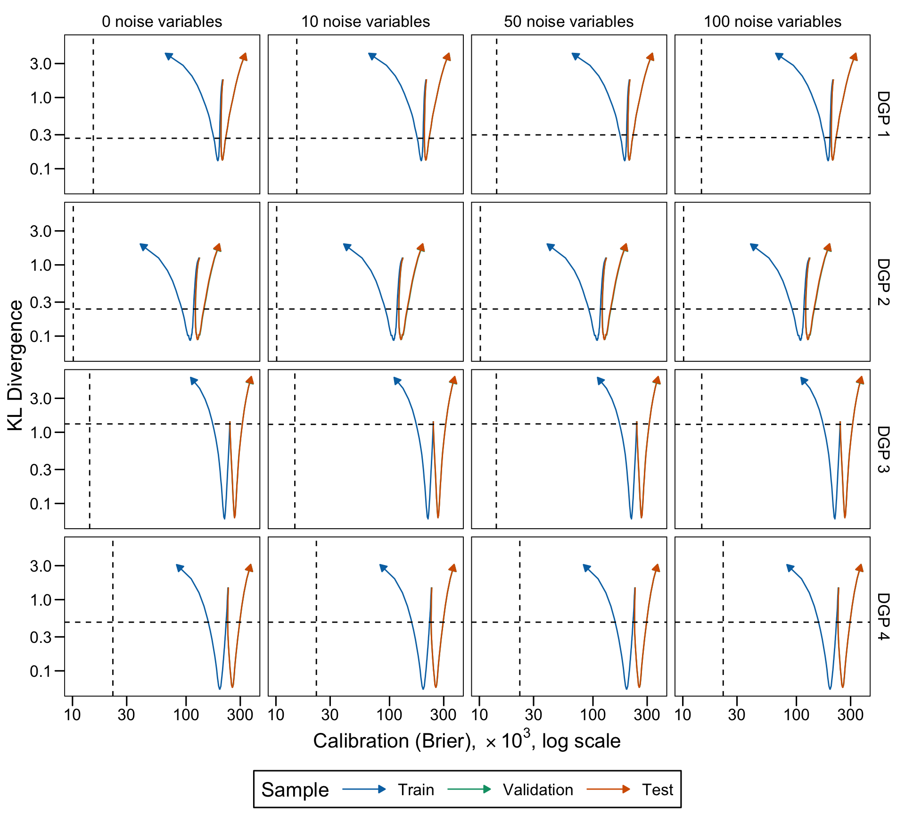

This chapter investigates how scores returned by a decision tree are impacted by the tree complexity. We vary the minimal number of observation in terminal leaves to obtain trees with varying number of leaves. In the resulting estimated trees, we look at the scores.
library(tidyverse)
── Attaching core tidyverse packages ──────────────────────── tidyverse 2.0.0 ──
✔ dplyr 1.1.4 ✔ readr 2.1.5
✔ forcats 1.0.0 ✔ stringr 1.5.1
✔ ggplot2 3.5.1 ✔ tibble 3.2.1
✔ lubridate 1.9.3 ✔ tidyr 1.3.1
✔ purrr 1.0.2
── Conflicts ────────────────────────────────────────── tidyverse_conflicts() ──
✖ dplyr::filter() masks stats::filter()
✖ dplyr::lag() masks stats::lag()
ℹ Use the conflicted package (<http://conflicted.r-lib.org/>) to force all conflicts to become errors
library(ggh4x)
Attaching package: 'ggh4x'
The following object is masked from 'package:ggplot2':
guide_axis_logticks
library(rpart)library(locfit)
locfit 1.5-9.9 2024-03-01
Attaching package: 'locfit'
The following object is masked from 'package:purrr':
none
library(philentropy)# remotes::install_github("gweissman/gmish")# Colours for train/testcolour_samples <-c("Train"="#0072B2","Validation"="#009E73","Test"="#D55E00")
definition of the theme_paper() function (for ggplot2 graphs)
We generate data using the first 12 scenarios from Ojeda et al. (2023) and an additional set of 4 scenarios in which the true probability does not depend on the predictors in a linear way (see Chapter sec-data-ojeda).
When we simulate a dataset, we draw the following number of observations:
nb_obs <-10000
Definition of the 16 scenarios
# Coefficients betacoefficients <-list(# First category (baseline, 2 covariates)c(0.5, 1), # scenario 1, 0 noise variablec(0.5, 1), # scenario 2, 10 noise variablesc(0.5, 1), # scenario 3, 50 noise variablesc(0.5, 1), # scenario 4, 100 noise variables# Second category (same as baseline, with lower number of 1s)c(0.5, 1), # scenario 5, 0 noise variablec(0.5, 1), # scenario 6, 10 noise variablesc(0.5, 1), # scenario 7, 50 noise variablesc(0.5, 1), # scenario 8, 100 noise variables# Third category (same as baseline but with 5 num. and 5 categ. covariates)c(0.1, 0.2, 0.3, 0.4, 0.5, 0.01, 0.02, 0.03, 0.04, 0.05),c(0.1, 0.2, 0.3, 0.4, 0.5, 0.01, 0.02, 0.03, 0.04, 0.05),c(0.1, 0.2, 0.3, 0.4, 0.5, 0.01, 0.02, 0.03, 0.04, 0.05),c(0.1, 0.2, 0.3, 0.4, 0.5, 0.01, 0.02, 0.03, 0.04, 0.05),# Fourth category (nonlinear predictor, 3 covariates)c(0.5, 1, .3), # scenario 5, 0 noise variablec(0.5, 1, .3), # scenario 6, 10 noise variablesc(0.5, 1, .3), # scenario 7, 50 noise variablesc(0.5, 1, .3) # scenario 8, 100 noise variables)# Mean parameter for the normal distribution to draw from to draw num covariatesmean_num <-list(# First category (baseline, 2 covariates)rep(0, 2), # scenario 1, 0 noise variablerep(0, 2), # scenario 2, 10 noise variablesrep(0, 2), # scenario 3, 50 noise variablesrep(0, 2), # scenario 4, 100 noise variables# Second category (same as baseline, with lower number of 1s)rep(0, 2), # scenario 5, 0 noise variablerep(0, 2), # scenario 6, 10 noise variablesrep(0, 2), # scenario 7, 50 noise variablesrep(0, 2), # scenario 8, 100 noise variables# Third category (same as baseline but with 5 num. and 5 categ. covariates)rep(0, 5),rep(0, 5),rep(0, 5),rep(0, 5),# Fourth category (nonlinear predictor, 3 covariates)rep(0, 3),rep(0, 3),rep(0, 3),rep(0, 3))# Sd parameter for the normal distribution to draw from to draw num covariatessd_num <-list(# First category (baseline, 2 covariates)rep(1, 2), # scenario 1, 0 noise variablerep(1, 2), # scenario 2, 10 noise variablesrep(1, 2), # scenario 3, 50 noise variablesrep(1, 2), # scenario 4, 100 noise variables# Second category (same as baseline, with lower number of 1s)rep(1, 2), # scenario 5, 0 noise variablerep(1, 2), # scenario 6, 10 noise variablesrep(1, 2), # scenario 7, 50 noise variablesrep(1, 2), # scenario 8, 100 noise variables# Third category (same as baseline but with 5 num. and 5 categ. covariates)rep(1, 5),rep(1, 5),rep(1, 5),rep(1, 5),# Fourth category (nonlinear predictor, 3 covariates)rep(1, 3),rep(1, 3),rep(1, 3),rep(1, 3))params_df <-tibble(scenario =1:16,coefficients = coefficients,n_num =c(rep(2, 8), rep(5, 4), rep(3, 4)),add_categ =c(rep(FALSE, 8), rep(TRUE, 4), rep(FALSE, 4)),n_noise =rep(c(0, 10, 50, 100), 4),mean_num = mean_num,sd_num = sd_num,size_train =rep(nb_obs, 16),size_valid =rep(nb_obs, 16),size_test =rep(nb_obs, 16),transform_probs =c(rep(FALSE, 4), rep(TRUE, 4), rep(FALSE, 4), rep(FALSE, 4)),linear_predictor =c(rep(TRUE, 12), rep(FALSE, 4)),seed =202105)rm(coefficients, mean_num, sd_num)
5.2 Metrics
We load the functions from Chapter sec-metrics to compute performance, calibration and divergence metrics.
source("functions/metrics.R")
5.3 Simulations Setup
For each scenario, we will grow a tree to predict the binary outcome using all the available variables in the simulated dataset. We train regression trees here, as we are interested in the resulting scores, not by the class given by a majority vote.
The desired number of replications for each scenario needs to be set:
repns_vector <-1:100
To obtain trees with varying number of leaves, we make the min_bucket parameter vary. This parameter defines the minimal number of observation in a terminal leaf node. A split is not performed if at least one of the resulting children leaves do not contain at least min_bucket observations. In addition, a split will not be attempted if the number of observation in the current node is lower than three times min_bucket.
For each scenario (i.e., different data generating process), we consider 100 replications: we draw 100 samples from the data generating process associated with the scenario.
5.3.1 Estimation Function
We define the simul_tree() function to make a single replication of the simulations.
Function simul_tree()
#' Train a tree and compute performance, calibration, and dispersion metrics.#' #' @param prune should the tree be pruned?#' @param min_bucket minimal number of observations in terminal nodes#' @param type either `"regression"` for regression tree or `"classification"`#' for classification tree#' @param simu_data simulated data obtained with `simulate_data_wrapper()`#' @param ind numerical ID of the simulation in the grid: different from the #' seed ID)simul_tree <-function(prune =c(TRUE, FALSE), min_bucket,type =c("regression", "classification"), simu_data, ind) { tb_train <- simu_data$data$train |>rename(d = y) tb_valid <- simu_data$data$valid |>rename(d = y) tb_test <- simu_data$data$test |>rename(d = y) true_prob <-list(train = simu_data$data$probs_train,valid = simu_data$data$probs_valid,test = simu_data$data$probs_test )# Estimation----if (type =="regression") { estim_tree <-rpart( d ~ x1 + x2, data = tb_train,method ="anova",minsplit = min_bucket *3,minbucket = min_bucket,cp =0 ) } else { estim_tree <-rpart( d ~ x1 + x2, data = tb_train,method ="class",minsplit = min_bucket *3,minbucket = min_bucket,cp =0 ) }if (prune ==TRUE) { ind_min_cp <-which.min(estim_tree$cptable[,"xerror"]) min_cp <- estim_tree$cptable[ind_min_cp, "CP"] estim_tree <-prune(estim_tree, cp = min_cp) } nb_leaves <-sum(estim_tree$frame$var=="<leaf>") depth <-max(rpart:::tree.depth(as.numeric(rownames(estim_tree$frame))))# Raw Scores----# Predicted scoresif (type =="regression") { scores_train <-predict(estim_tree, newdata = tb_train) scores_valid <-predict(estim_tree, newdata = tb_valid) scores_test <-predict(estim_tree, newdata = tb_test) } else { scores_train <-predict(estim_tree, newdata = tb_train)[,"1"] scores_valid <-predict(estim_tree, newdata = tb_valid)[,"1"] scores_test <-predict(estim_tree, newdata = tb_test)[,"1"] }# Histogram of scores breaks <-seq(0, 1, by = .05) scores_train_hist <-hist(scores_train, breaks = breaks, plot =FALSE) scores_valid_hist <-hist(scores_valid, breaks = breaks, plot =FALSE) scores_test_hist <-hist(scores_test, breaks = breaks, plot =FALSE) scores_hist <-list(train = scores_train_hist,valid = scores_valid_hist,test = scores_test_hist )# Estimation of P(q1 < score < q2) proq_scores_train <-map(c(.1, .2, .3, .4),~prop_btw_quantiles(s = scores_train, q1 = .x) ) |>list_rbind() |>mutate(sample ="train") proq_scores_valid <-map(c(.1, .2, .3, .4),~prop_btw_quantiles(s = scores_valid, q1 = .x) ) |>list_rbind() |>mutate(sample ="valid") proq_scores_test <-map(c(.1, .2, .3, .4),~prop_btw_quantiles(s = scores_test, q1 = .x) ) |>list_rbind() |>mutate(sample ="test")# Dispersion Metrics disp_train <-dispersion_metrics(true_probas = true_prob$train, scores = scores_train ) |>mutate(sample ="train") disp_valid <-dispersion_metrics(true_probas = true_prob$valid, scores = scores_valid ) |>mutate(sample ="valid") disp_test <-dispersion_metrics(true_probas = true_prob$test, scores = scores_test ) |>mutate(sample ="test")# Performance and Calibration Metrics# We add very small noise to predicted scores# otherwise the local regression may crash scores_train_noise <- scores_train +runif(n =length(scores_train), min =0, max =0.01) scores_train_noise[scores_train_noise >1] <-1 metrics_train <-compute_metrics(obs = tb_train$d, scores = scores_train_noise, true_probas = true_prob$train ) |>mutate(sample ="train") scores_valid_noise <- scores_valid +runif(n =length(scores_valid), min =0, max =0.01) scores_valid_noise[scores_valid_noise >1] <-1 metrics_valid <-compute_metrics(obs = tb_valid$d, scores = scores_valid_noise, true_probas = true_prob$valid ) |>mutate(sample ="valid") scores_test_noise <- scores_test +runif(n =length(scores_test), min =0, max =0.01) scores_test_noise[scores_test_noise >1] <-1 metrics_test <-compute_metrics(obs = tb_test$d, scores = scores_test_noise, true_probas = true_prob$test ) |>mutate(sample ="test") tb_metrics <- metrics_train |>bind_rows(metrics_valid) |>bind_rows(metrics_test) |>mutate(scenario = simu_data$scenario,ind = ind,repn = simu_data$repn,prune = prune,min_bucket = min_bucket,type =!!type,nb_leaves = nb_leaves,depth = depth,prop_leaves = nb_leaves /nrow(tb_train) ) tb_prop_scores <- proq_scores_train |>bind_rows(proq_scores_valid) |>bind_rows(proq_scores_test) |>mutate(scenario = simu_data$scenario,ind = ind,repn = simu_data$repn,prune = prune,min_bucket = min_bucket,type =!!type,nb_leaves = nb_leaves,depth = depth,prop_leaves = nb_leaves /nrow(tb_train) ) tb_disp_metrics <- disp_train |>bind_rows(disp_valid) |>bind_rows(disp_test) |>mutate(scenario = simu_data$scenario,ind = ind,repn = simu_data$repn,prune = prune,min_bucket = min_bucket,type =!!type,nb_leaves = nb_leaves,depth = depth,prop_leaves = nb_leaves /nrow(tb_train) )list(scenario = simu_data$scenario, # data scenarioind = ind, # index for gridrepn = simu_data$repn, # data replication IDprune = prune, # pruned tree?min_bucket = min_bucket, # min number of obs in terminal leaf nodetype = type, # tree type: regression or classificationmetrics = tb_metrics, # table with performance/calib metricsdisp_metrics = tb_disp_metrics, # table with divergence metricstb_prop_scores = tb_prop_scores, # table with P(q1 < score < q2)scores_hist = scores_hist, # histogram of scoresnb_leaves = nb_leaves, # number of terminal leavesdepth = depth # tree depth )}
5.3.2 Grid
We define a grid with the different values for the arguments used to call the simul_tree() function. The whole grid can be seen in Table tbl-grid-tree.
Table 5.2: Average Performance and Calibration Metrics Computed on Test Set Over 100 Replications Under Scenario 1. Standard errors between round brackets.
5.5.2 Figures
5.5.2.1 Distribution of Scores
Let us plot the distributions of scores for the trees of interest (smallest, largest, max AUC, min MSE, min KL) for a single replication for each scenario.
The dashed lines correspond to the values of the KL divergence and the calibration of the forest at which the AUC is the highest among the models of the grid search.
Figure 5.3: KL Divergence and Calibration (ICI) across increasing average number of leaves in the trees (log scales)

Ojeda, Francisco M., Max L. Jansen, Alexandre Thiéry, Stefan Blankenberg, Christian Weimar, Matthias Schmid, and Andreas Ziegler. 2023. “Calibrating Machine Learning Approaches for Probability Estimation: A Comprehensive Comparison.”Statistics in Medicine 42 (29): 5451–78. https://doi.org/10.1002/sim.9921.